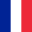
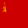
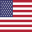
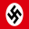
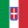

A segunda guerra mundial, foi a maior guerra que o mundo já viu, tendo um número total de mortes estimado entre 70.000.000 a 85.000.000, ela teve início em 1 de setembro de 1939 e teve fim em 2 de setembro de 1945 com a rendição do japão, mas nós vamos chegar lá.
A guerra teve dois lados os sendo eles:
Aliados: Reino Unido, França, União Soviética e Estados Unidos (principais)
Eixo: Alemanha, Itália e Japão (principais)
Mas você pode se perguntar “Estados unidos e Rússia do mesmo lado ?”, você até estaria certo se nao estivesse errado, a rússia teve 3 “fases” durante o período das grandes guerras: O Império russo que caiu com a revolução russa; União soviética ou como também é chamada URSS (União das Repúblicas Socialistas Soviéticas) que teve como fim a falência do sistema econômico em 1991 e por fim a Rússia dos dias de hoje.
Os líderes dos aliados eram: Joseph Stalin, Franklin Delano Roosevelt
Os líderes do eixo: Adolf Hitler, Fumimaro Konoe e Benito Mussolini
Vamos falar sobre cada um deles individualmente mais tarde (ou voce clicka aqui e ja da uma lida).
| Bandeira do pais | Nome do pais | Afiliacao | % da populacao morta | |
|---|---|---|---|---|
| Reino Unido | Aliados | 1% | ||
|  | França | Aliados | 1.45% | |
|  | Uniao Sovietica(URSS) | Aliados | 14% | |
|  | Estados Unidos (USA) | Aliados | 6.58% | |
|  | Alemanha | Eixo | 8.47% | |
|  | Italia | Eixo | 1.20% | |
| Japão | Eixo | 4% | ||
| 4% da populacao mundial morta | ||||
Todas as informacoes e imagens foram retiradas da wikipedia, com isso em mente volte la para cima e clique nos outros topicos.